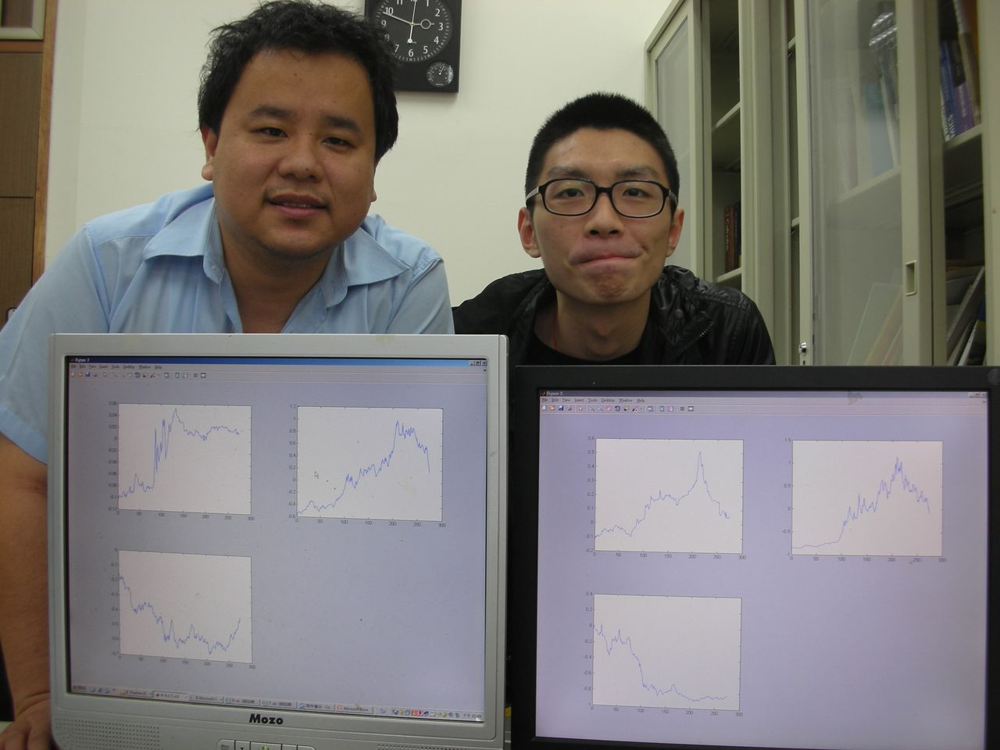

吳偲維 Wu, Szu-Wei
Higher Education
Master ,
Institute of Finance
,
National Chiao Tung University
,
Thesis: Evaluating the Implied Return and Correlation of the Asset Value of the Firm
Adviser: Prof.
Tian-Shyr, Dai
Talks and Presentations
Matlab 基礎財務分析與應用
:
(補充) 投資組合績效評估與選取(CAPM補充)